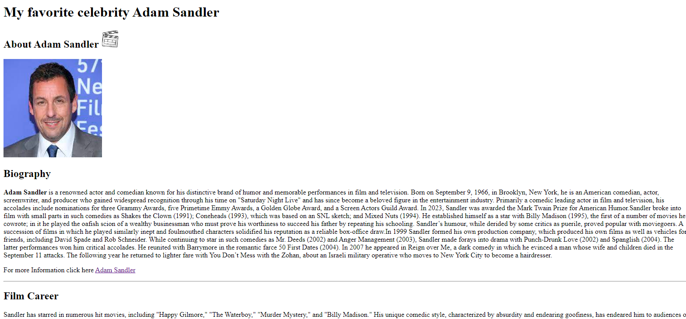
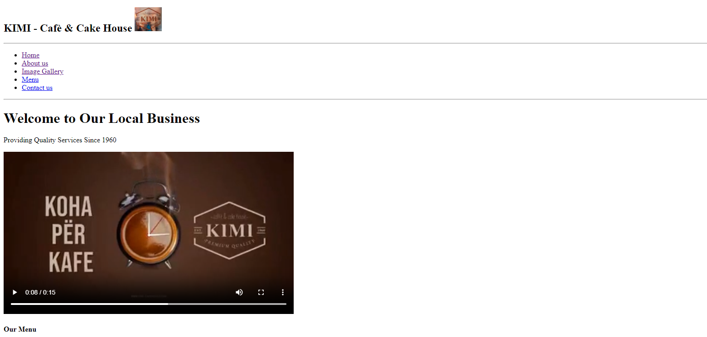
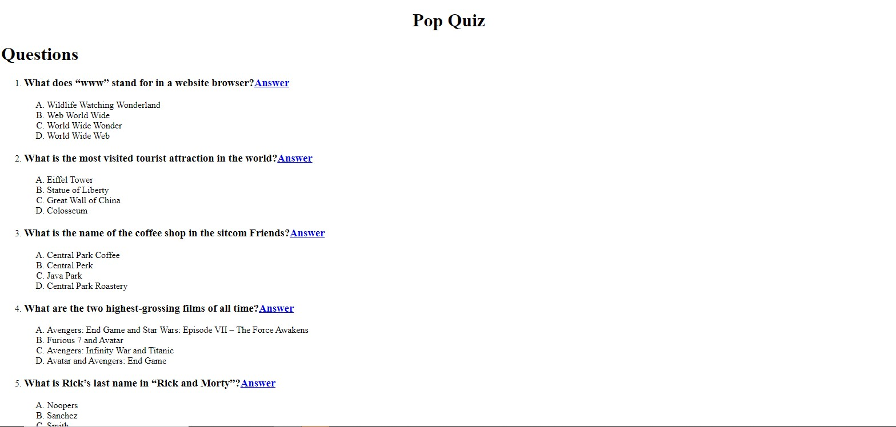

Introducing my celebrity fan page project! I created a dynamic and engaging website that provides in-depth information about my favorite celebrity.From his biography and career highlights to his latest projects and achievements, this page offers a comprehensive look into the live of Adam Sandler .I incorporated stunning visuals, captivating videos, and interactive elements to make the browsing experience truly immersive.With this project, I aimed to showcase my passion for both web design and my favorite celebrity.
For my portfolio website, I showcased a project where I designed and developed a website for Kimi - Cafè & Cake House. I created a visually appealing and user-friendly landing page that captures the essence of the cafe's cozy atmosphere and delicious menu. The page features stunning images of their mouthwatering cakes and aromatic coffees, along with a menu section that highlights their offerings.With this project, I aimed to showcase my skills in web design and development while promoting the delightful experience of Kimi - Cafè & Cake House. "
Ready for a pop quiz? Let's put your knowledge to the test! I created an exciting quiz that challenges you with questions from various subjects.Get ready to flex your brain muscles and see how well you know stuff! Whether you're a student like me or just love learning new things, this pop quiz is a fun way to challenge yourself and expand your knowledge."
